Our education program focuses on helping students understand plant stress, climate change, sustainability, and synthetic biology through hands-on activities and interactive learning.
We designed the lessons and materials, built and prepared the educational activities, tested them through implementation in schools, and learned from survey results and feedback. Our program and lesson plan meaningfully improved students’ understanding of synthetic biology and plant science concepts, while also strengthening their attitudes toward science. DNA base pairing remained a challenging concept, with only 30% of students answering correctly after the lesson. All three teachers who took the survey indicated they would be willing to continue participating.
To make synthetic biology and the iGEM competition accessible, engaging, and inclusive for everyone, we created a dedicated education website.
Through this platform, we share our team's active journey, highlight our mission and vision, showcase our educational philosophy, and provide open-access tools for students and educators around the world.
Mission & Vision
We believe education is an important part because it allows us to share our research and ideas and make complex ideas more accessible to students. Through our promotion, we introduce topics like synthetic biology in a simple and engaging way, even for those with no prior background. We also hope that through our education, students of different ages are able to ignite their interest in this area and inspire them to think critically about real-world problems.
We aim to:
Integrate STEM learning with schools in an interactive way
Encourage interest in scientific research
Help students think about how science impacts society
Education Website
Overview
In the process of developing our education lessons and events, we realized that it was important for people to have the ability to access our lessons and other resources in order to create a truly sustainable form of education. Driven by this thought, we decided to create a website of our own that could serve as a centralized center where students and educators alike could easily be able to freely access things such as interactive learning modules, ready-to-use lesson plans, etc. By transforming our materials into open-access tools, we aim to extend our reach beyond one-time workshops and empower communities to explore and teach about synthetic biology and our projects independently.
Development
In the process of developing this website, we wanted to focus on building an intuitive, user-friendly environment tailored to a diverse audience ranging from elementary students to high school educators.
To bring the platform to life, we focused on three main goals:
Trust & Transparency: Learning environment that provides clear information about who we are as an iGEM team, alongside age-appropriate, verified science content.
Clarity: Created clean, easy-to-use menus so users can explore without getting lost.
Accessible Resources: Direct download links for educators or students to access lesson plans, slides, and worksheets instantly.
Website Architecture & Key Features
Together, we integrated all these ideas and our thought process into one integrated website that includes the following information/content:
About Us
Clearly establishes who we are as an iGEM team, introducing our team members, our core mission, and our passion for synthetic biology. It gives students and teachers a transparent look at the people behind the project and why we care about accessible science education.
Resources
Serves as a centralized library of free, downloadable lesson plans, slides, and hands-on activities tailored specifically for elementary, junior high, and high school levels. Teachers can easily integrate these materials into their existing curriculum without needing prior expertise in synthetic biology.
Science & Ethics
This page of our website helps our audience understand what synthetic biology really implies and a simplified version of what synthetic biology can look like in the real-world. We ensure students not only learn how synthetic biology works, but also learn to think critically about how it should be responsibly used in the real world.
Blogs & News
This page provides constant updates on our educational journey, sharing project milestones, event highlights, and behind-the-scenes stories. It keeps our community updated on our progress while archiving the experiences we have received in our outreach events.
Get Involved
Invites teachers, students, and community members to connect with our team directly. This section provides simple forms to request or sign up for interactive workshops, collaborate on educational initiatives, or share valuable feedback to help us refine our resources.
Designing an effective educational lesson requires moving from big ideas to a smooth, classroom-ready reality. Before stepping into a classroom, our team dedicated significant time to carefully planning, testing, and refining our educational content. We wanted to make sure our synthetic biology concepts were not only accurate and age-appropriate, but also engaging, safe, and easy for teachers. This phase outlines the process we used to transform complex scientific concepts into hands-on learning experiences for students across all age groups.
Design Process
The whole process of designing our lessons revolved around these main four steps, developing lesson plans with varying educational levels, trialing games and experiments we plan to carry out during our lessons/workshops, having a full run-through session of our lesson, and lastly communicating and reaching out to schools. Below are our proceedings in more detail:
1 · Lesson Plan Development
Before we started designing, we split the work so each team member focused on a single age group: primary, middle, or high school. This approach ensured every lesson plan received dedicated attention, allowing us to tailor the scientific depth, vocabulary, and teaching methods specifically to that age group’s learning capabilities. Next, we brainstormed the type of activities and content best suited for each group. We focused on keeping core synthetic biology, plant biology, and sustainability concepts consistent and present throughout all age groups while introducing aspects of iGEM and the project we were working on. We then scaled the complexity and depth of these details depending on the target age group. Other than just including things we felt were important, we also took the time to verify whether the content we were planning on teaching were already being taught in schools, ensuring our lessons didn't just repeat classroom material, but instead introduced fresh ideas to inspire students and spark their interest in new areas.
2 · Trialing
Next, after our lesson plans underwent initial review, we put our ideas to the test by trialing the experiments, arts & crafts, and games. We tested each activity firsthand to evaluate timing, gauge student engagement, and troubleshoot potential safety or technical issues. This hands-on trial phase allowed us to fine-tune every component, ensuring that the activities were both fun and seamlessly integrated into the lesson structure.
3 · Contacting Schools to collaborate with
To share our curriculum, we compiled a target list of schools and reached out directly via email to gauge their interest. We also created an easy sign-up sheet using Google Forms, which we included on the “Get Involved” page of our website. This simplified process for interested educators and gave schools a quick, accessible way to partner with us for our workshops.
4 · Run-through Sessions
Once school dates were confirmed, we assigned team members to each session. We then divided the slides and tasks so everyone could present topics they knew best. About a week before each event, we held full practice runs to simulate a real classroom setting and keep everyone on track. During these run-throughs, we also tested our games and experiments to fix any issues and ensure everything ran smoothly on the day of the event. Using these sessions helped us check whether the lesson plan contents and time allocation for each section was appropriate for the age group we were teaching.
Execution
In the world we live in nowadays, synthetic biology and other related areas are often associated with negative perceptions due to misconceptions surrounding the topic. As a result heated debates surrounding genetic engineering and biotechnology erupted with some questioning the morals and safety of continuing this practice. Additionally, students have limited opportunities to learn about synthetic biology, climate change, and sustainability through engaging, age-appropriate educational experiences. After recognizing this gap, we sought to provide students of all ages and the public with educational experiences that foster and encourage informed discussions about synthetic biology and its real-world applications. Lastly, throughout our events, sustainability and the development of reusable educational materials have also been a central focus in both the planning and execution of our educational activities.
This whole process was integrated using the DBTL (Design–Build/Prep–Test–Learn) where we designed the lessons and materials, built and prepared the educational activities, tested them through implementation in schools, and learned from survey results and feedback to refine and improve future sessions.
We intentionally planned our event dates to give us enough time to make necessary adjustments between sessions. Grouping these events into trials allowed us to compare them over time and see exactly how our ongoing improvements boosted the students' knowledge, attitudes, and skills.
To achieve the goals set above, we thoughtfully designed events that revolved around age-appropriate and interactive learning experiences that could actively engage students into learning about simplified biological concepts and thinking about the implications of synthetic biology to the world around them. With these thoughts in mind, each of our sessions are structured to introduce key concepts such as climate change, plant biology, and synthetic biology, ensuring that students could build understanding step by step. Our teaching materials, including presentations, games, experiments, and hands-on activities, were developed to encourage participation and curiosity, while also reinforcing core concepts in an accessible way.
However, we realized that learning goes both ways and that in order to bring the best experiences to those around us, we had to continue to evaluate ourselves and make improvements on our end. To evaluate and improve our sessions, we implemented pre- and post-education surveys that allowed us to assess the students' baseline knowledge before the event and the outcome of their learning afterwards. The post-education survey was designed using the K-A-P (Knowledge-Attitude-Practice) framework which included questions of all types including multiple choice, 1-5 scale, and free response questions that allowed us to assess the knowledge they had gained but also if they had any changes in opinions when it came to perceptions, and intended behaviors in their future. All the data collected was used to help better our program for subsequent events.
Lastly, to ensure long-term impact, we promoted sustainable education through our website and survey-based evaluation of the willingness of teachers to continue engaging with our program in the following years. We made our resources such as teaching materials, educational games, and other learning tools more accessible to both teachers and students. To achieve this, we created a website that provides free access to all of our educational content. This includes downloadable lesson plans, slides, worksheets, comics, and games developed in the previous years as well as this year. In addition, the website also includes introductory content on iGEM and synthetic biology to provide users with a clearer understanding of the field and our project context.
This year, our team visited 3 elementary schools spanning over the months of June and July. During these lessons, we delivered an interactive Synbio workshop titled “Little Plant Guardians: Combating Environmental Stress”. These lessons were made for elementary students ranging from fourth to sixth grade with the goal of raising awareness and sparking interest in topics such as climate change and its implications on plant stress, synthetic biology, and simple ideas behind photosynthesis and how DNA works.
In order to integrate the DBTL process into our lessons we separated the five lessons we held into three different trials – Preliminary trial (June 24th, 2026), Trial 1 (June 25th/26th, 2026), Trial 2 (June 29th, 2026), and Trial 3 (July 14th, 2026). Using this method, we hoped to see improvements in the results of the surveys we designed alongside the lesson plan.
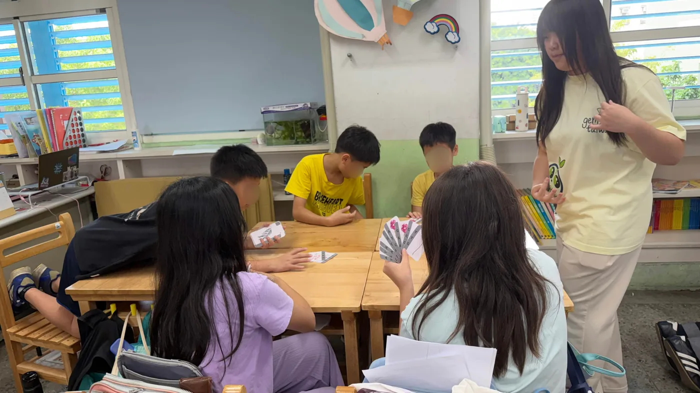
Fig. 1. Students playing the ATCG Card Game
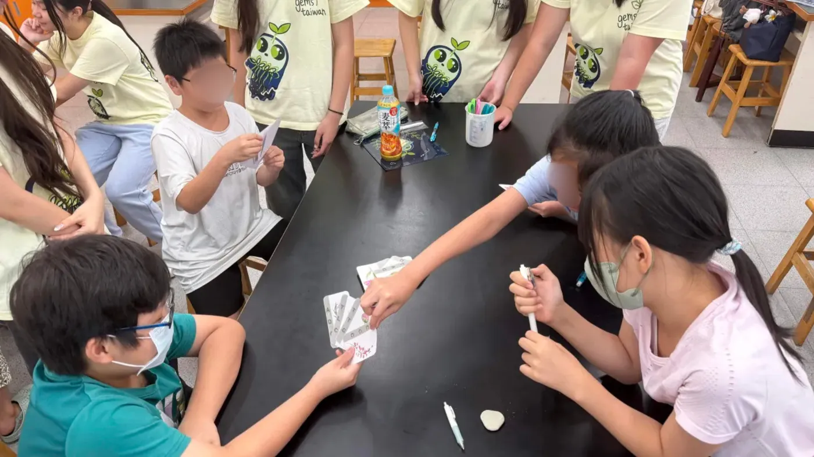
Fig. 2. Students playing the ATCG Card Game
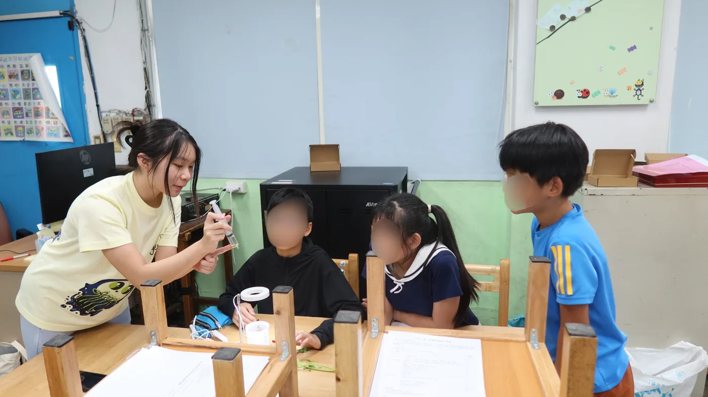
Fig. 3. Demonstrating experiment
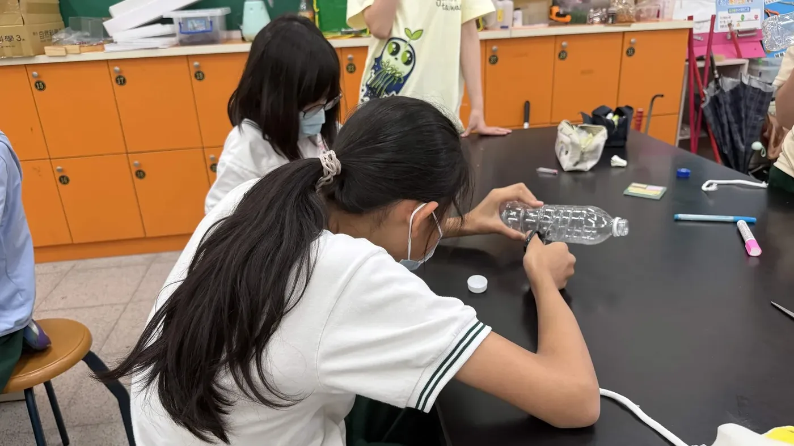
Fig. 4. Students making their own self-watering planter
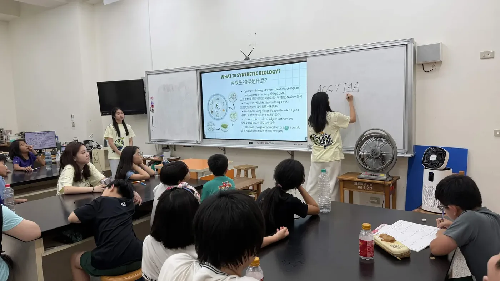
Fig. 5. Students learning about DNA and Synthetic Biology
In order to assess the baseline knowledge students had towards the topic before the lesson and to compare these results to the Post-Survey results, we designed a simple survey hosted on Kahoot which consisted of seven multiple choice questions asking about simple concepts that will be taught in the lesson that day.
Introduction: Questions of the Day
To start off our lesson we posed a few questions that asked students to discuss the implications of climate change and how that would impact plants and the way humans lived. After, we also introduced a few problems being caused by climate change and how that would impact the world around us. Through these questions, the students were able to familiarize themselves with the contents of the lesson as well as to prompt further reflection on related issues.
Vocabulary
Next, we moved onto simple vocabulary, including words that were deeply related to today's ideas such as biotic, climate change, photosynthesis, genetics, etc. We utilized illustrated slideshows to introduce new vocabulary, encouraging students to infer word meanings through visual cues and prefix analysis, making students feel more engaged in our workshop.
Photosynthesis
After vocabulary, we moved onto learning about the process of photosynthesis and the materials involved in the reactants and products of the process. This concept was introduced through a simple yet captivating video as well as a summary of the process shown in the slideshow. By breaking down the complex system and process of photosynthesis into more accessible concepts, students were able to better grasp the main ideas.
Plant Stress
In the following section, we introduced the different types of stress that plants face in two categories: biotic and abiotic, defining biotic stress as damage caused by living organisms like pests and pathogens, and abiotic stress as harm resulting from non-living environmental factors like drought and extreme temperatures. We then analyzed the unique coping mechanisms and physiological changes plants undergo to survive these distinct pressures.
Experiment
We then moved on to conducting a simple experiment that allowed students to really visualize what photosynthesis would look like in real time. The students were thrilled and in awe to watch tiny spinach leaf disks, initially sunk at the bottom of a beaker, slowly float to the surface as they generated oxygen under a light source. To connect back to the core idea of our project, we introduced heat as a variable in the experiment, this was done by replacing the room-temperature water with warmer water. As a result of this, the flotation process slowed down significantly or even stopped, showing the students that excessive heat can damage plant enzymes and hinder photosynthesis. Throughout the experiment, students were given worksheets that encouraged them to record experiment results as well as to discuss the results of the experiment with team members.
The Role of Science
Later, we moved onto genetics introducing the concept of ATCG base pairing and how DNA passes down from one generation to the next. Students were chosen to come up to the front of the class to write down the correct sequence that corresponded to the example given to them. We then connect genetics to synthetic biology and its ability to help solve real-world problems such as the ones being discussed in the class.
Interactive Card Game
To reinforce these concepts, we created an original card game based on DNA base pairing. Played similarly to ‘Joker,’ the game challenged students to pair the correct ATCG letters together, making the learning process highly interactive and solidifying their memory of how DNA bases pair up.
Arts & Craft: Self-Watering Plant
Near the end of the lesson, students participated in a hands-on arts and crafts activity, transforming recycled PET bottles into self-watering planters using a basic rope wick. This provided a perfect tangible analogy for our overall project on automated protectant release. It allowed students to visualize how a continuous, automated supply system can autonomously protect a plant from environmental pressures without needing constant manual intervention.
Post-Survey and Feedback
At the end of the lesson, we asked students to fill out a survey to assess the effectiveness and the impact of our workshop. The survey was designed following three main categories: K (knowledge), A (attitude), and P (practice), it also included free response questions where students were free to share things like their favorite part of the lesson as well as any concerns or feedback they have for our program.
Three Trials at a Glance
Trial
Date
Location
Pre-survey #
Post-survey #
Preliminary
June 24th, 2026
Yongping Elementary School
16 Students
12 Students
Trial 1
June 25th-26th, 2026
Dingxi Elementary School
43 Students
42 Students
Trial 2
June 29th, 2026
Affiliated Experimental Elementary School of University of Taipei
28 Students
22 Students
Trial 3
July 14th, 2026
Dingxi Elementary School
12 Students
12 Students
Suggestions & Changes Made
Student Feedback
Trial
Issue Raised
Changes Made
Preliminary (6/24)
Better cooperation between the teaching team
Reinforced pre-session briefing and made sure each member knew their roles and how to fill in when needed
Trial 1 (6/25+26)
Classroom Pacing and Cognitive Buffers: Student reflections stated ‘give us more time to play’ and ‘make it more flexible.’
Paid more attention to the progress of each group to ensure they got to a certain point before moving on
Trial 1 (6/25+26)
Physical Constraints & Ambient Acoustic Audits: Students noted ‘the sound could be louder’ or ‘sometimes it was hard to hear.’
Made sure to turn up volume on videos and reminded members to raise their voices when speaking
Trial 1 (6/25+26)
Technical Scaffolding for Diverse Fine Motor Skills: Some students noted ‘I wish there was more help during the assembly/experiment.’
Since primary school students possess varying levels of fine motor skills, we plan to have a strict 1:5 mentor-to-student ratio.
Trial 2 (6/29)
English-language content as barrier ‘too much english’, ‘too much vocab’, ‘english is too hard’
Spend more time on explaining vocabulary and broke down more complex words into shorter and simpler concepts
Teacher Feedback
Trial
Issue Raised
Changes Made
Trial 2 (6/29)
Explain how the Self-Watering planter is related to the topic of today's lesson
Spent more time before the activity to ask and explain to students how this was related to our topic.
Trial 1 (6/25+26)
Cited issues with discipline at times
Made sure to set up boundaries and simple rules and get the students' attention before starting the lesson
Trial 1 (6/25+26)
Should explain the results and the experiment more clearly and deeply
Added more explanation and allocated more time to explaining the results and listening to what the students had to say or ask
Trial 3 (7/14)
Could include more English teaching
In future lessons we could try to teach more in English other than just the vocabulary words
Summary
This interactive workshop successfully bridged complex scientific concepts like synthetic biology and genetics with engaging, hands-on activities, leaving elementary students with a practical understanding of how science can help protect plants from environmental stress.
Junior High
The Battle Against Climate
Our team visited 1 junior high school this year spanning over the months of June and July. During our education event, we presented a Synbio workshop titled “The Battle Against Climate: Miniature Projects to Protect Plants”. The lessons were designed for students spanning across grades 7 to 9 covering experiments, debates, and even a card game. The goal of the education event was to tackle topics such as photosynthesis, climate change, and synthetic biology.
In order to assess the students’ baseline knowledge, we created a Kahoot with seven multiple choice questions based off the topic we would be teaching later. By assessing these results, we can compare them with the post-education result to see how much the students learned through our lesson.
Introduction
To start off our lesson, we begin with introducing climate change and plant stresses. We begin by addressing the different types of stresses there are. For example, we mention high temperatures, droughts, flooding, and pests/diseases. As most students are familiar with the different types of plant stresses, we introduce the two terms biotic and abiotic. After, we introduce ways plants can defend against the varying stresses, for example, closing the stomata or producing stress-hormone responses.
Photosynthesis
We start off the section by introducing the chemical equation behind photosynthesis and its main idea. Following that, we ask a few questions regarding how stress affects leaves and whether or not photosynthesis actually occurs. We showed them an online game that allows student to apply different amount of vital necessities plants need to clearly showcase the effect of each factor.
Experiment
We then moved into a hands-on experiment designed to let students actually watch photosynthesis happen in real time. Using spinach leaf disks that initially sank to the bottom of a beaker, students observed with excitement as the disks slowly rose to the surface, propelled by the oxygen bubbles they produced under a light source. To tie the experiment back to our project's central theme, we introduced heat as a variable by swapping the room-temperature water for warmer water. This caused the flotation process to slow dramatically or stop altogether, giving students a clear, visual demonstration that excess heat damages plant enzymes and disrupts photosynthesis. Throughout the activity, students used worksheets to record their observations and discuss their findings with teammates.
Synthetic Biology
The next section we did was introduce synthetic biology and how synbio can help relieve plant stress. Because DNA was a fundamental basis of synthetic biology, the lesson plan incorporated basic definitions of the function of the DNA and its structure. To tie it back to our project, we mentioned real world applications of synthetic biology and briefly introduced our project as well.
Card Game
To make the lesson more fun, we also created a card game that enables the students to really understand the effects of stress on plants. Each round begins by spinning the wheel to reveal a stress. All players then simultaneously check their hands, laying cards face-up if they hold a valid combo (a Sensor plus an Action card matching the revealed stress, with an optional Boost card). Players who form a valid combo are safe and discard those cards, while players who cannot may play a Functional card to steal or swap cards from a teammate who already succeeded. Anyone still without a valid combo after that receives one disaster token, and the next round begins.
Debate
Lastly, to end our lesson, we asked the students to participate in a debate. Currently, using synthetic biology on plants is a major debate throughout society, so through this activity students get to understand why exactly synthetic biology is controversial. Students split into two teams, Supporting (in favor of synthetic biology) and Opposing (against it), and are given 8 minutes to prepare their arguments. Each team selects 3 speakers, who take turns presenting in order, discussing for 45 seconds as a team before each turn and then speaking individually for 2 minutes. The first speaker lays out their team's evidence and reasoning, the second rebuts the opposing team's first speaker using their own team's evidence and reasoning, and the third summarizes the round and explains why their side should be favored over the opponent's.
Post-education Survey
To wrap up the lesson, students completed a survey designed to gauge the workshop's effectiveness and overall impact. The survey was structured around three core categories, Knowledge (K), Attitude (A), and Practice (P), and also included open-ended questions, giving students the opportunity to share their favorite parts of the lesson along with any concerns or feedback for the program.
Suggestions & Future Plans for Improvement
Student Feedback
Issue Raised
Planned Changes
Lesson pacing: Feedback indicated that lengthy instructional presentations were not as helpful as interactive sections.
Lecture pacing: Some students felt that parts of presentation were too long, with feedback such as “Spoke for a bit too long.”
Need for more interactive activities: Students identified “playing games,” board games, and card activities as the highlight of the lessons.
Maintain the game-based learning components, while ensuring that each game directly reinforces the scientific concept being taught.
Difficulty understanding DNA base pairing: Only 30% of students answered the DNA base-pairing question correct after the lesson.
Introduce a color-coded DNA puzzle kit so students can physically match complementary bases and better visualize the concept.
Summary
Through our education program, we introduced junior high school students to plant stress, photosynthesis, climate change, and synthetic biology through a combination of interactive lessons, hands-on experiments, games, and debates. The spinach leaf-disk experiment provided students with a visual demonstration of how heat can affect photosynthesis, while the card game and debate encouraged them to apply synthetic biology concepts and consider different perspectives on its use in agriculture. Pre- and post-education surveys allowed us to evaluate changes in students’ knowledge, attitudes, and intended practices. Overall, the program successfully combined scientific learning with active participation, while student feedback highlighted the need to reduce lecture time, expand interactive activities, and provide additional visual support for difficult concepts such as DNA base pairing. These findings will guide us in improving future workshops and making our education program more engaging and accessible.
High School
Decoding the Genetic Code
During August, our team visited 1 high school to expand our educational initiative. In the lesson, we conducted a Synbio workshop titled “Decoding the Genetic Code: From DNA to the Future of Food Security”. Our lessons were designed to engage students across 10th to 12th grade through hands-on experiment, mutation game, and discussions on topics such as plasmolysis, DNA mutation, and abiotic and biotic stress. Specifically, we tailored the lesson slides and created a lesson plan for students to better understand the concept.
Fig. 1. Students learning different types of abiotic and biotic stress
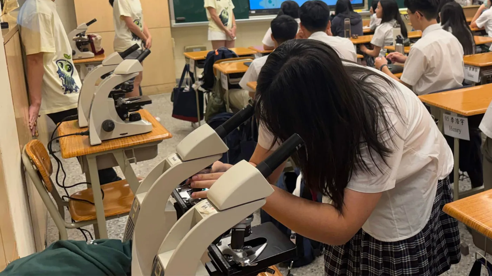
Fig. 2. Students observing the onion cell through the microscope
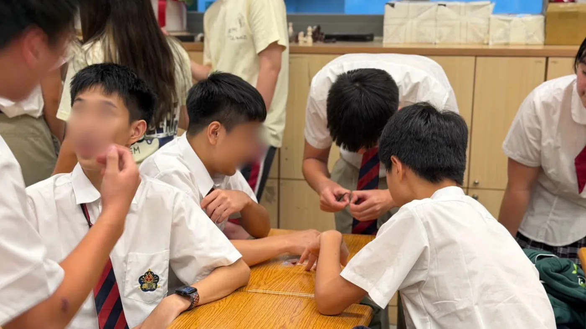
Fig. 3. Peeling off a thin layer of onion for the plasmolysis experiment
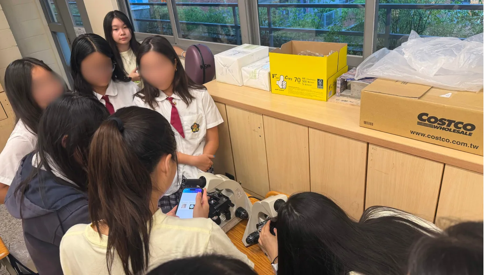
Fig. 4. Students observing the onion cell through the microscope
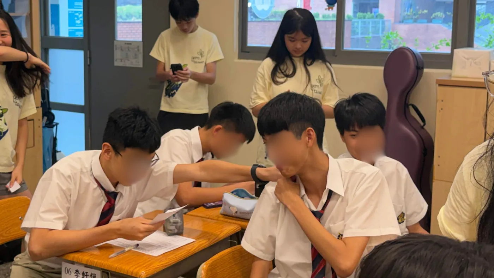
Fig. 5. Students passing down the code in the mutation game
Before our lesson, we designed a short survey that includes six multiple-choice questions on Kahoot in order to assess the students’ baseline knowledge and provide them with a preview of the topics that would be covered in the lesson. The results were then compared with those of the post-survey to evaluate students’ improvement after the lesson.
Introduction
To begin our lesson, we start off by introducing the students to the iGEM competition to provide them with a basic understanding of its purpose and the concepts behind synthetic biology. Afterward, we explained the concept of synthetic biology and introduced several of its real-world applications, such as engineering microorganisms to produce biofuels and creating biosensors that detect and remove environmental pollutants.
Plant Stress
Next, we started the section with a guiding question: “As the Earth gets warmer and drier, what will happen to the plants?”, which allowed students to establish a connection with the concepts that would be introduced in the following section. We then introduced different types of plant stress, including biotic stress caused by pests and pathogens and abiotic stress caused by factors such as salinity and drought, as well as how these stresses can affect our daily lives. To help students better understand the experiment that would be conducted later, we also explained the defense mechanisms of plants when facing environmental stress.
Experiment: Plasmolysis
After explaining the effects of stress on plants, we then moved on to the experiment to provide students with a more concrete demonstration of how salinity stress can affect plant cells. In the experiment, the students observed the changes in the pigment within onion cells before and after applying salt solutions. To demonstrate the effects of different levels of salinity stress, we prepared 3 M and 6 M salt solutions for different groups of students. After applying the salt solutions for 15 minutes, the students compared the effects of the different salt concentrations and observed how the pigments within the cells changed in response to the salinity stress.
Photosynthesis
While waiting for the onion to fully immerse in the salt solution, we prepared a short video that demonstrates and visualizes photosynthesis. In the video, we prepared two beakers that contained different temperatures of water: room-temperature water and warmer water, and they were placed under the light source. Each beaker contained small spinach leaf disks that initially sank to the bottom. After a certain period of time, the disks were propelled by the oxygen bubbles they produced and slowly rose to the surface. However, the disks in the warmer water didn’t rise as effectively as the disks in the room-temperature water. This experiment demonstrates how heat can damage plant enzymes and disrupt photosynthesis. After the experiment section, the video explained the mechanism of the experiment and asked several questions to help the students better understand the concepts.
Synthetic Biology
After the video, we introduced the students to our team and our project, ReLeaf. In this section, we first discussed some of the challenges faced by farmers. We then explained how our stress-responsive bioreactor works, as well as the synthetic biology mechanisms we designed to activate the system and release plant protectants in response to environmental stress, helping to protect plants grown in both soil and hydroponic systems.
DNA
After concluding the experiment section, we briefly reviewed several fundamental DNA concepts, including base-pairing rules, transcription, translation, and the role of amino acids in protein synthesis.
DNA Mutation
To help students better understand the processes of transcription, translation, and mutation in a more engaging and interactive way, we organized a game in which students worked together to pass a genetic sequence down the line. Students were given one of three different roles: the Sighter, Messenger, and Builder. The Sighter transcribed a DNA sequence and passed the transcribed sequence to the next student. The Messenger passed down the sequence to the next person. The Builder translated the sequence received from the student behind them. After the Builder wrote down their answer, each group checked their answers with the answer key. Through this interactive game, students can picture how genetic information is translated and transcribed more easily and understand how changes or errors in the sequence can lead to mutations.
Lastly, we introduced the students to how engineered mutations can enhance plant protectant release in order to maximize extracellular protectant release while maintaining bacterial viability. In this section, we explained how different mutations target different components of the stress-responsive system to enhance protectant release through three distinct mechanisms: increase receptor sensitivity to the stress signal, engineer the export protein, and modify the protectant molecule for improved membrane permeability. We also explained the trade-offs that need to be considered to balance protectant release efficiency with bacterial viability, as overproduction may place additional stress on the bacteria and reduce their overall viability.
Post-education Survey
To conclude the lesson, we designed a post-survey consisting of three core categories: Knowledge (K), Attitude (A), and Action (A). The survey allowed us to evaluate the effectiveness of our educational lesson by assessing students’ knowledge, attitudes, and willingness to engage in relevant actions in the future. It also included three open-ended questions, which provided students with an opportunity to share their feedback, thoughts, and concerns regarding the lesson.
Suggestions & Future Plans for Improvement
Issue Raised
Future Improvement
Several students expressed their curiosity about how DNA sequences can be modified.
Include a clearer explanation or visual example showing how DNA sequences can be modified.
Students indicated that they would like a more detailed explanation of how mutations occur.
Provide more detailed explanations and examples or videos of how different types of mutations occur.
Students suggested that the speakers’ voices could be louder, the font could be bigger, and there could be fewer words on the slides.
Improve voice projection, increase font size, and simplify slides by reducing unnecessary text.
At the end of the survey, several students expressed curiosity about how DNA sequences can be modified and indicated that they would like a more detailed explanation of how mutations occur. Beyond suggestions related to the lesson content, students also provided feedback on the presentation and delivery, such as “the speakers’ voices could be louder,” “the font could be bigger,” and “there could be fewer words on the slides.” As we were teaching a class of 28 students within a limited timeframe, we attempted to incorporate and deliver as much knowledge as possible. However, in doing so, we did not sufficiently consider whether the students could effectively absorb and follow all of the information presented. Looking at the results from the Knowledge section of the survey, the plasmolysis question had the highest percentage of correct responses in the post-survey. This suggests that the interactive, hands-on learning experience may have contributed to students’ understanding of the concept.
Summary
Overall, the responses and feedback suggest that the hands-on plasmolysis experiment and interactive games contributed to higher student engagement and stronger knowledge outcomes compared with the more traditional lecture-based components of the lesson. Based on this observation, we recognized the importance of incorporating more interactive elements throughout the lesson to further enhance student engagement and understanding.
Impact of Our Lessons
Overview
Together, we organized all the data we received from our surveys into one cohesive analysis that clearly exemplified all of our impacts throughout these education events.
144students
5schools
3elementary schools
1junior high school
1high school
Specific feedback from students
Elementary
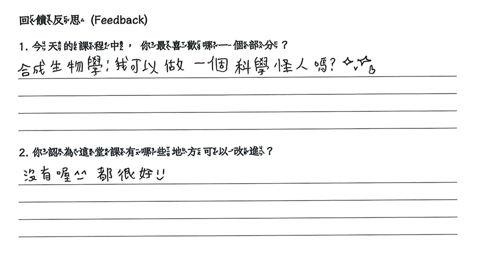
Elementary
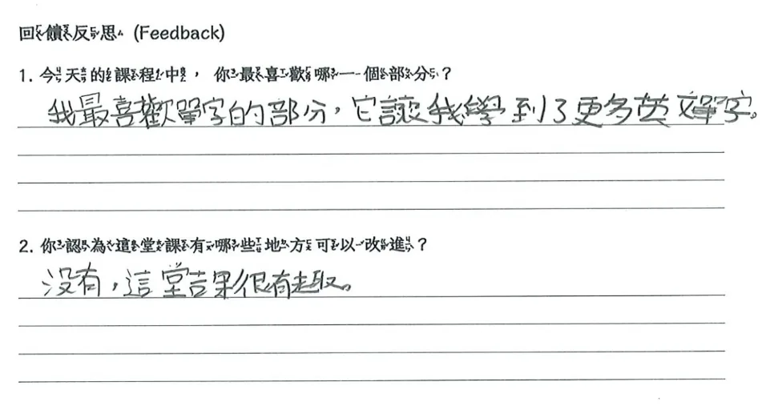
Elementary
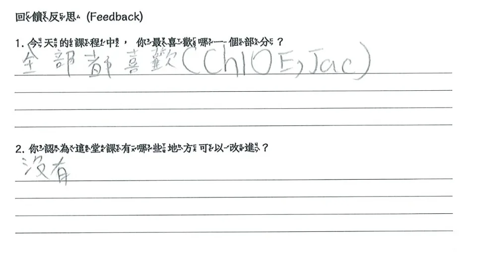
Junior High
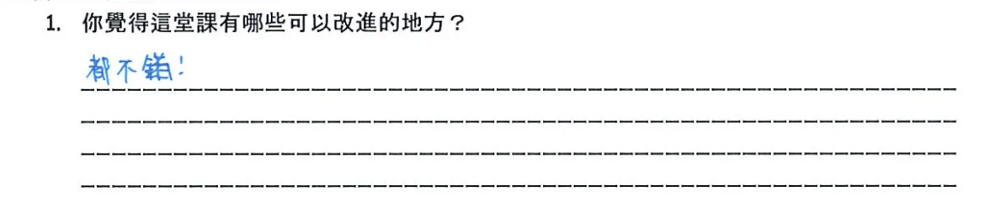
Junior High
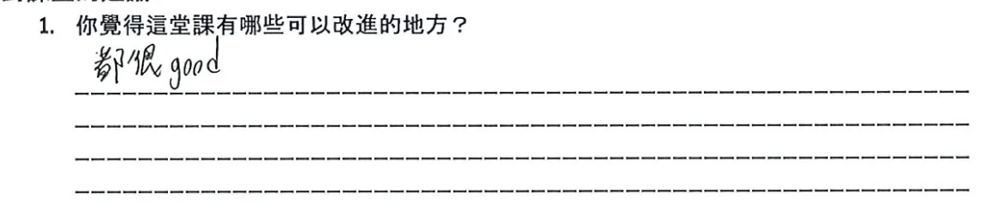
Junior High
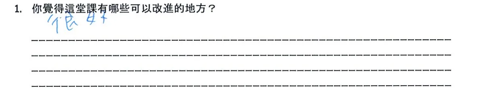
High School
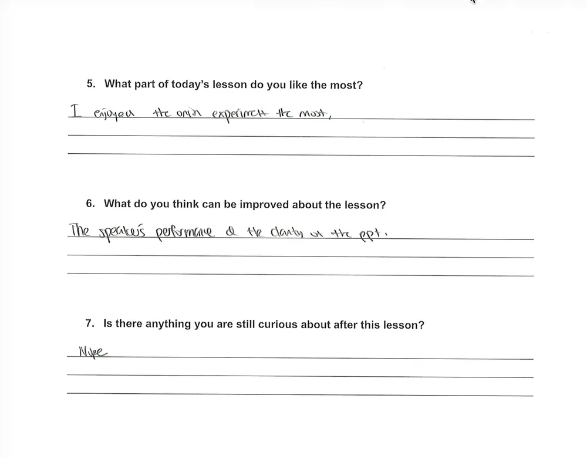
High School
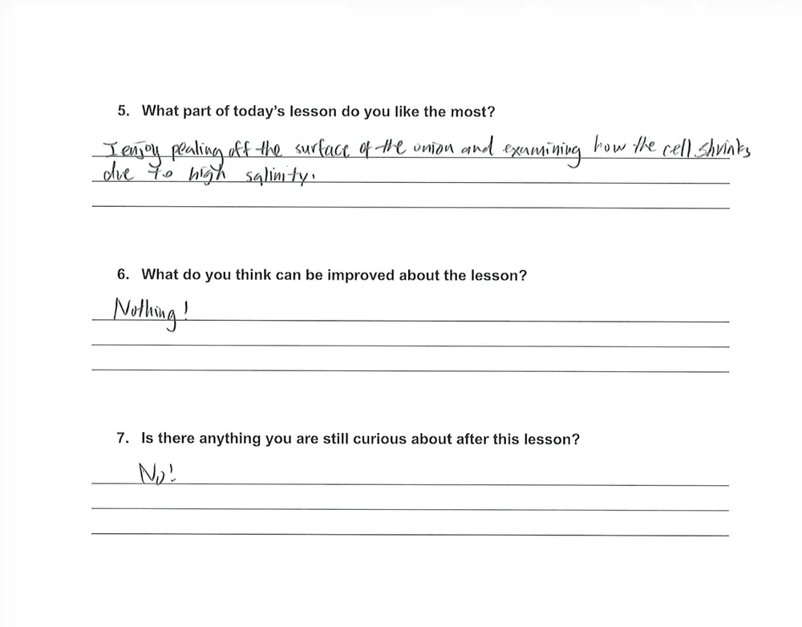
High School
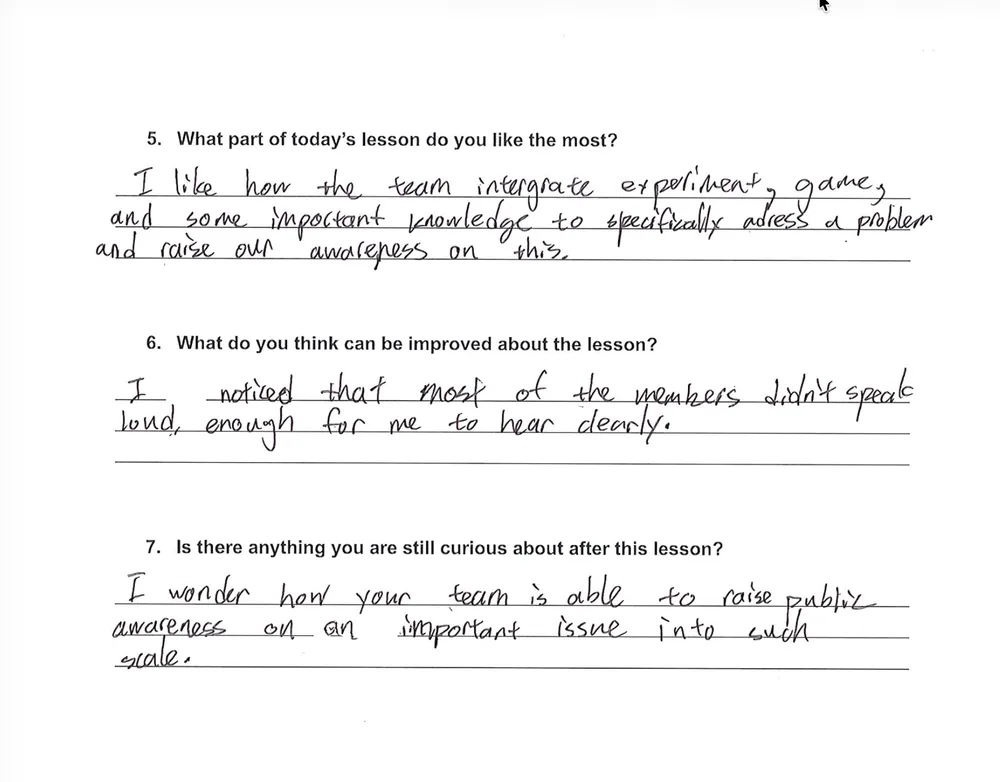
High School
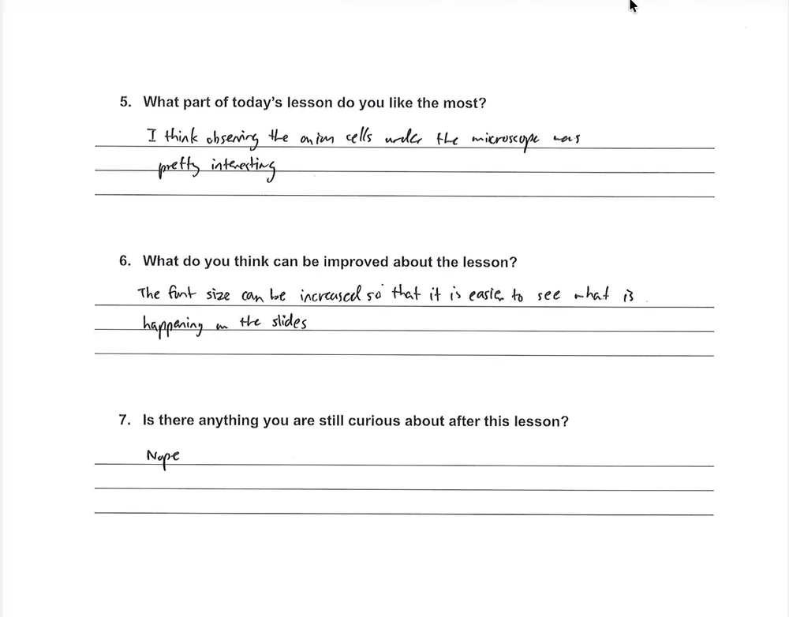
Little Plant Guardians
Elementary Analysis
This page presents a comprehensive analysis of all the data collected during our elementary school outreach events. The data presented below were obtained through pre- and post-education surveys where students were asked a few questions regarding the contents of the lesson as well as any general feedback they had about the lesson. Across our four trials, we continuously adjusted and improved our workshop based on real-time feedback from students and teachers. The charts below showcase the overall averages across all our trials as well as data comparing each individual trial. Together they highlight student knowledge gains, attitude shifts, and future engagement in plant science and synthetic biology.
Elementary Survey Contents
K. Knowledge (7 benchmark questions)
Photosynthesis: Identify the reason why plants need to undergo photosynthesis
Photosynthesis: Identify the correct inputs of photosynthesis
Photosynthesis: Identify the correct outputs of photosynthesis.
Plant Stress: Understand and realize how the stress faced by plants can be split into abiotic and biotic stress
Abiotic and Biotic Stresses: Correctly distinguish an example of biotic stress
DNA and Genetics: Understand the four letters that make up our DNA and how they pair up.
Climate Change Impact: Identify one effect of climate change on farming
A. Emotion & Attitude (A–D), Agree/Neutral/Disagree
A. Interest in Contents of the class: I found today's activities and lesson to be fun/interesting
B. Interest in science and plants: After today's lesson, I am more interested in plants and science.
C. Understanding real-world applications: After today's lesson, I believe more that science can help solve real-world problems.
D. Awareness of plant stress: After today's lesson, I am more aware that environmental factors like climate and drought can affect plant growth.
P. Future Action (E–H), Agree/Neutral/Disagree
E. Openness to agricultural biotechnology: After today's lesson, I know that synthetic biology can be used to improve poor plant growth.
F. Desire for more learning: After today's lesson, I hope to participate in more lessons or activities like this in the future.
G. Environmental awareness & Problem solving: When encountering real-world problems, I want to use the power of science to solve them.
H. Knowledge sharing & Future Action: I want to learn more about science and participate in related activities in the future.
Open-ended feedback
What was your favorite part of today's class?
What could be improved about this class?
Knowledge Growth Across Trials
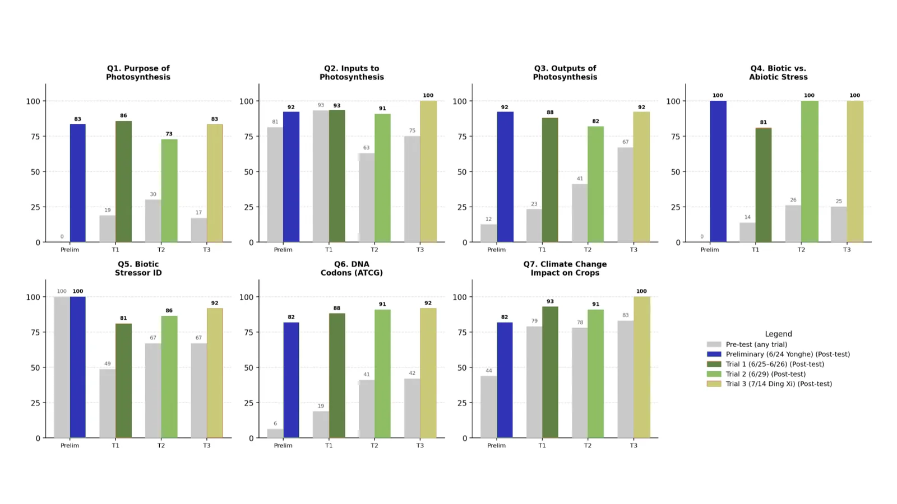
Fig. 1. Knowledge Benchmark Results Across Four Trials (Pre- vs Post-Survey % Correct)
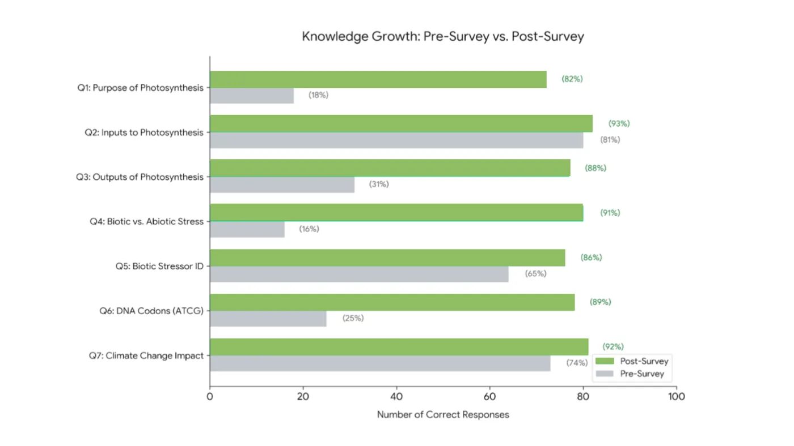
Fig. 2. Average of Future Attitude & Practice Response (% “Yes”) across Four Trials
Summary
Both Fig. 1 and Fig. 2 measure the knowledge benchmark portion of our survey, assessing how well students understood the core biological and synthetic biology concepts taught in our workshop.
In Fig. 1, student scores are broken down by individual trials to observe performance shifts over time. While most concepts showed clear improvement, the data also highlights where certain topics posed challenges. For example, Q1 (Purpose of Photosynthesis) saw a slight dip in Trial 2 before recovering in Trial 3, and Q2 (Inputs to Photosynthesis) showed high baseline scores early on, leaving less room for drastic post-test percentage gains. However, Trial 3 achieved the strongest overall consistency across the series, reaching 100% post-test accuracy on Q2, Q4, and Q7, demonstrating how our ongoing adjustments helped stabilize student learning outcomes.
In Fig. 2, we combined all of the trial data into one average score to evaluate our overall impact across the entire student cohort. Comparing baseline pre-survey scores directly against final post-survey results reveals clear learning gains across all seven questions. The largest leaps in understanding occurred in specialized concepts where prior student knowledge was lowest, specifically Q4 (Biotic vs. Abiotic Stress) and Q6 (DNA Codons), both starting at or below 25% accuracy and jumping to around 90% following the lesson. Overall, our post-education survey shows a large boost in accuracy when compared to the pre-education survey with all questions scoring at least an 80% in accuracy.
Attitude & Practice Across Trials
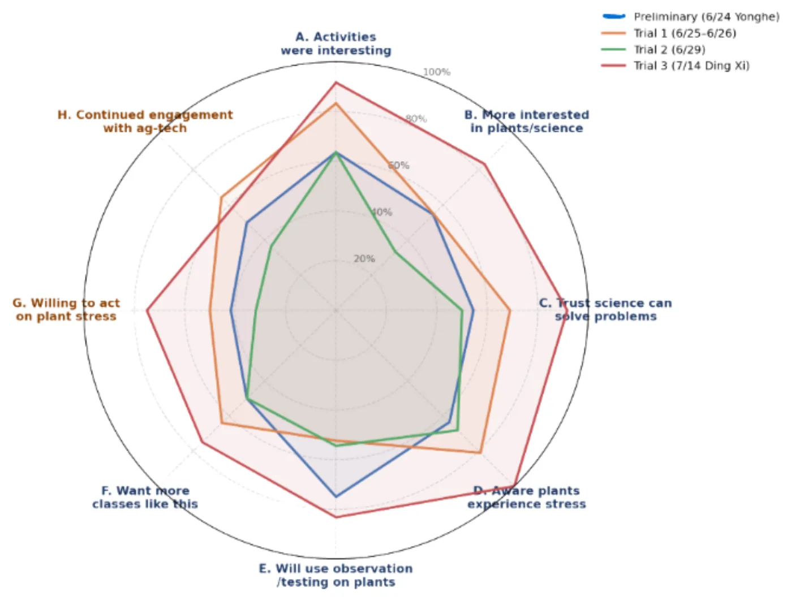
Fig. 3. Changes in future Attitude & Practice Response (% “Yes”) across Four Trials
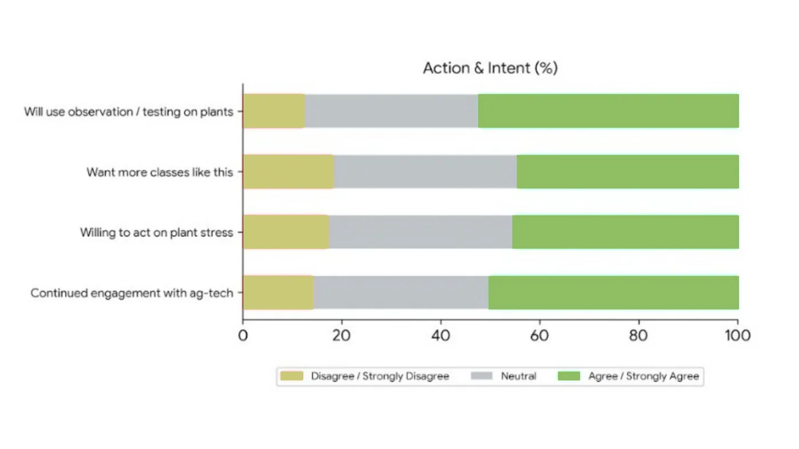
Fig. 4. Combined Average of Student Action & Intent Responses Across All Four Trials
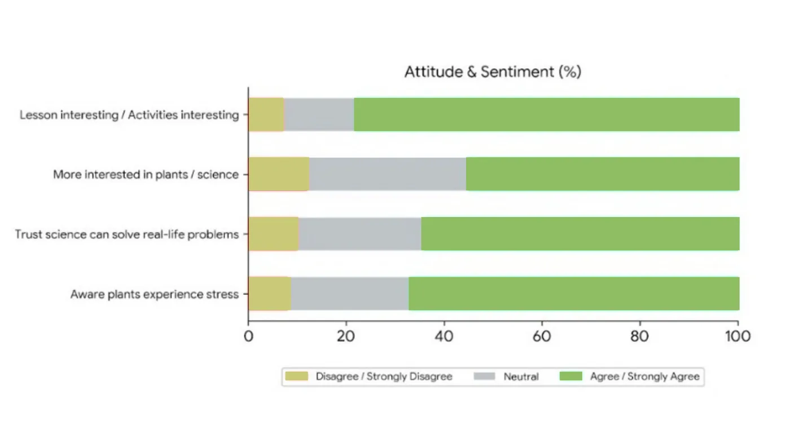
Fig. 5. Combined Average of Student Attitude & Sentiment Responses Across All Four Trials
Summary
These graphs evaluate the attitude and future practice metrics collected from our student post-surveys, measuring how the workshop shaped student interest, scientific trust, and practical intent.
Fig. 3 Analysis. In Fig. 3, the radar chart maps out student responses across eight attitude and practice measures (A through H) for each individual trial. On this chart, an outward-stretching line indicates a higher percentage of “Yes” responses, meaning greater agreement and positive student attitude toward the subjects we discussed. While earlier rounds like the Preliminary trial and Trial 2 saw smaller, inward coverage areas, Trial 3 (red line) expanded furthest outward on every axis, demonstrating our highest rate of positive feedback and intent to apply these concepts.
Fig. 4 Analysis. In Fig. 4, the horizontal bars consolidate responses across all trials to assess practical student intent and future actions they will take regarding plant science applications. A strong majority of students expressed agreement or neutral sentiment toward using plant observation tools, participating in future classes, taking action on plant stress, and engaging with ag-tech. Disagreement rates remained consistently low (under 20% across all categories), demonstrating that the hands-on format successfully built student interest in applying plant science outside the classroom.
Fig. 5 Analysis. In Fig. 5, the aggregated data highlights overall student sentiment across four core attitude statements. Overwhelmingly, students reported that the lessons and activities were interesting, with roughly 80% indicating positive agreement. While general scientific curiosity and trust in science showed slightly higher proportions of neutral responses, overall negative sentiment remained minimal, confirming that the workshop cultivated an encouraging and accessible introduction to synthetic biology concepts.
Open-ended: What Students and Teachers Enjoyed
Students: Across all four trials, games and interactive activities were consistently the most enjoyed part of the sessions for the students. The DNA card game and Kahoot quizzes the most as being the favorites, with most students citing them as their favorites throughout all 4 trials. Other than that, students specifically called out the photosynthesis experiment and working with soil and seeds on their own as a fun activity they liked. In Trial 3, arts and crafts activities became the clear standout, with several students noting they liked it because it was “a hands-on experience.” A few students also mentioned being able to learn about DNA and ATCG directly.
Teachers: Teachers were consistently positive about the sessions overall, describing them as content-rich and well-structured. Several specifically mentioned how activities like Kahoot, the DNA card game, and the automated watering system build kept students engaged while tying back to the core science concepts, and noted the bilingual format helped, particularly when new vocabulary was taught separately to lower unfamiliarity for students. One teacher also highlighted students' willingness to get up and present as something worth encouraging. Teachers also expressed enthusiastic views about the education website, calling the resources rich and expressing interest in using them for future teaching, particularly around plant-related topics. All three teachers who took the survey indicated they would be willing to continue participating in or supporting the program in the future.
Summary
Taken together, this data shows that our program and lesson plan meaningfully improved students' understanding of synthetic biology and plant science concepts, while also strengthening their attitudes toward science and their intention to apply it in real life. The consistent gains across all four trials, paired with the direct link between student and teacher feedback and the changes we made along the way, demonstrate that our DBTL approach genuinely translated into a better learning experience over time.
The Battle Against Climate
Junior High Analysis
Junior High Survey Contents
K. Knowledge (7 benchmark questions)
Photosynthesis purpose: why plants photosynthesize (making food/energy to grow)
Photosynthesis inputs: what plants need (sunlight, water, CO₂)
Photosynthesis outputs: what plants produce (oxygen, glucose/food)
A. Interest: found synthetic biology interesting today
B. Academic curiosity: wants to learn more about bacteria/plants
C. Trust in science: trusts experiments as a way to understand the world
D. Eco-awareness: will pay more attention to weather's effect on plants
E. Scientific-method intent: understands why scientists run experiments to test ideas
F. Desire for more classes: wants more classes like this one
P. Future Practice (G–H), Yes/Somewhat/No
G. Willingness to act: will observe/record plant growth at home or school
H. Continued engagement with ag-tech: will seek out more info on agricultural tech or bacterial engineering
Open-ended feedback
What was your favorite part of today's class?
What could be improved about this class?
Knowledge Growth
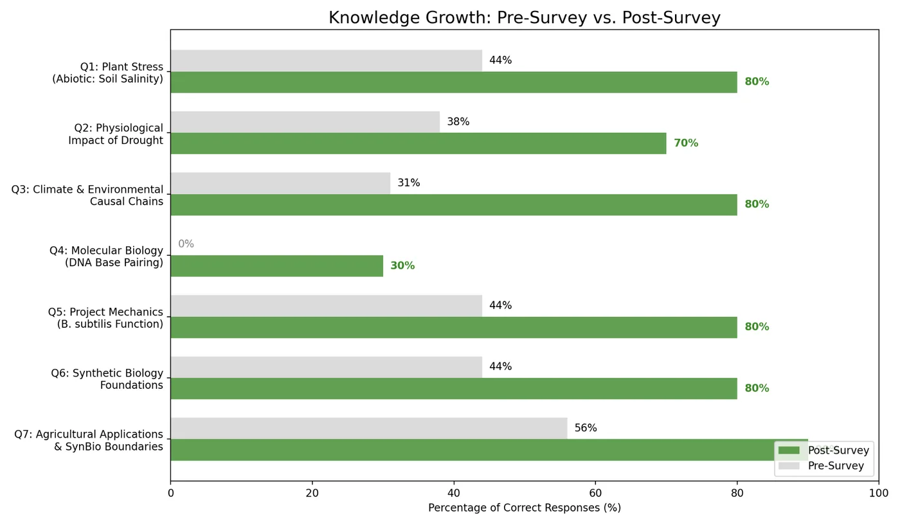
Fig. 1. Comparison of Correct Responses in Pre- and Post-survey
Attitude & Practice
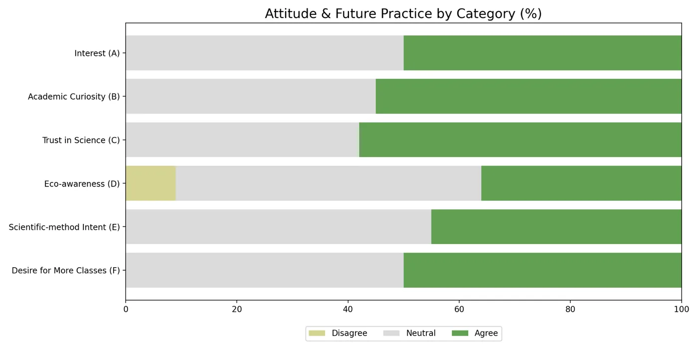
Fig. 2. Combined Average of Student Attitude & Sentiment Responses Across All Four Trials
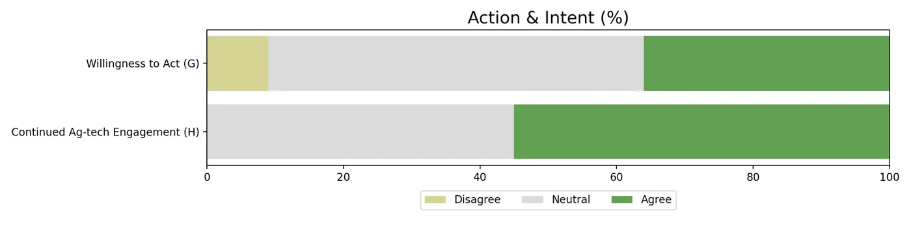
Fig. 3. Combined Average of Student Action & Intent Responses Across All Four Trials
This radar chart plots the percentage of students who agreed with each of six attitude and practice statements from the post-test survey, spanning both the Emotional & Attitude dimension (A1–A3: trust in synthetic biology, environmental awareness, and nuanced GMO views) and the Future Practice dimension (P1–P3: observation intent, scientific media thinking, and knowledge sharing). Knowledge sharing (P3) came out as the strongest response at 70%, suggesting students left the workshop eager to talk about what they learned, while environmental awareness (A2) was the softest point at 40%, indicating that translating the lesson into a lasting sense of environmental urgency is an area with room to grow.
Open-ended: What Students and Teachers Enjoyed
Students: Across student reflections, hands-on activities were consistently named as the most memorable part of the workshop, with students citing “playing games,” “board games,” and “card playing” as their favorite moments. They were underscoring how effective physical, interactive game mechanics were at driving engagement. Several students also highlighted the novelty of the material itself, describing the best part of the day simply as “learning completely new things.” Feedback on the session's structure and delivery was likewise positive, with multiple students summarizing the experience as “everything was great,” suggesting the overall flow and presentation landed well.
Areas for Improvement
The clearest piece of critical feedback centered on pacing: students noted that portions of the direct instruction “went on a bit too long,” pointing lecture style teaching segments as the weak link relative to the hands-on activities. This pacing concern is reinforced by the case studies. Even a high-performing student who scored perfectly across the knowledge benchmarks deemed the lecture length as a drawback, indicating that stronger students in particular need less review time and faster transitions into applied, game-based learning. On the knowledge side, DNA base-pairing remained the toughest concept to land: despite a meaningful jump from a 0% pre-test baseline to 30% post-test accuracy, it was the one area where a student was observed making a direct conceptual error (matching ATCG to itself rather than its complement TAGC), signaling that this topic needs a more hands-on teaching method rather than passive explanation alone.
General feedback summary
The survey results demonstrated a strong increase in students’ scientific knowledge, with the largest improvement seen in understanding climate and environmental causal chains, which increased by 49%. Students’ understanding of B. subtilis and synthetic biology also increased significantly, from 44% to 80%. The activity also encouraged knowledge sharing, with 70% of students indicating that they would share the plant and synthetic biology concepts they learned with friends and family, suggesting that the outreach could extend its impact beyond the classroom. Additionally, students responded particularly well to the interactive games and hands-on activities, which were frequently identified as their favorite parts of the session. However, DNA base pairing remained a challenging concept, with only 30% of students answering correctly after the lesson, highlighting the need for more hands-on and visual tools when teaching abstract scientific concepts.
Summary
Taken together, the qualitative feedback reinforces what the quantitative data already suggested that the workshop's games, hands-on elements were its strongest asset, driving both enjoyment and knowledge retention, while the lectures were comparatively less engaging and, in the case of DNA base-pairing, insufficient on their own to fully cement an unfamiliar abstract concept. These findings point to two clear, actionable next steps, spending more time on hands-on activities rather than direct lectures, that would let future iterations lean further into the interactive formats students already responded to best.
Decoding the Genetic Code
High School Analysis
This page presents an analysis of the data collected during our high school education lesson. The data were gathered through pre- and post-lesson surveys, in which students were asked questions related to the lesson content and their general feedback on the lesson. The survey results highlight changes in students’ knowledge, attitudes, and willingness to take future actions.
High School Survey Contents
K. Knowledge (7 benchmark questions)
Point mutations: identify which type of mutation is not a point mutation.
Biotic and abiotic stress: distinguish between stresses caused by living organisms and non-living environmental factors.
Plant response to salinity: understand that high salinity can cause water loss from plant cells, leading to plasmolysis.
Synthetic biology applications: identify common applications of synthetic biology, such as engineering microorganisms and creating biosensors.
Bioreactors: understand that bioreactors are used to grow cells or microorganisms under controlled conditions to produce useful substances.
Purpose of genetic mutations: understand that scientists can intentionally modify genes or proteins to change a microorganism's function, such as altering which signal a receptor responds to.
Mutations and agricultural applications: understand how engineered microorganisms or genetic modifications could potentially help plants respond to environmental stress and support food production.
A. Emotion & Attitude (A–E), Agree/Neutral/Disagree
A. Understanding real-world applications: I believe synthetic biology can help solve real-world problems
B. Awareness of plant stress: I am more aware of how environmental stress can affect plants and crop production.
C. Openness to agricultural biotechnology: I am more open to synthetic biology applications in agriculture.
D. Interest in synthetic biology: I found synthetic biology interesting today.
E. Desire for more learning: I would like to participate in more lessons or activities like this in the future.
P. Future Action (G–J), Agree/Neutral/Disagree
G. Environmental awareness: I will pay more attention to how heat, rain, drought, and other environmental conditions affect plants in my daily life.
H. Interest in synthetic biology: I will consider exploring synthetic biology as a possible field of study at university.
I. Knowledge sharing: I will share what I learned about biotic and abiotic stress with friends or family members.
J. Openness to agricultural biotechnology: I will be more open to learning about and considering synthetic biology applications in agriculture.
Open-ended feedback
What part of today’s lesson do you like the most?
What do you think can be improved about the lesson?
Is there anything you are still curious about after this lesson?
Knowledge Growth
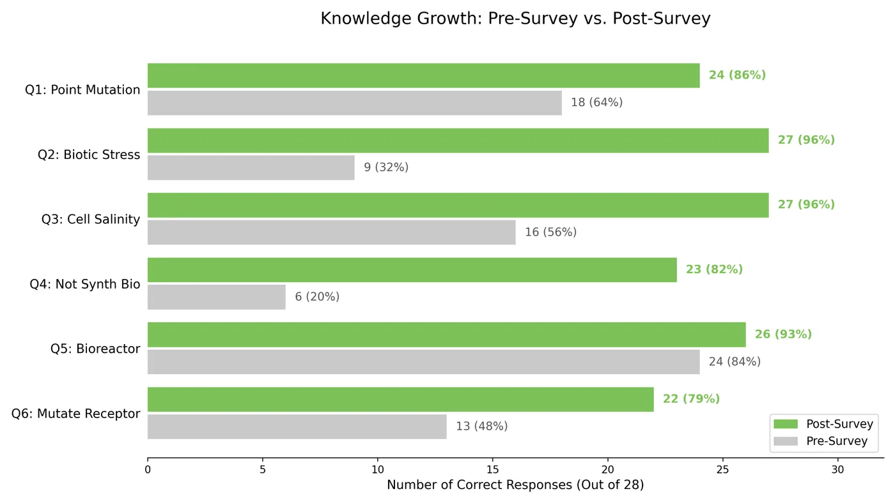
Fig. 1. Comparison of Correct Responses in Pre- and Post-survey
In Fig. 1, we compared the number of correct responses among 28 students in the Knowledge section of the pre- and post-surveys. Following the lesson, the percentage of correct responses increased for every question, indicating an overall improvement in students’ understanding of the concepts covered. For instance, the percentage of correct responses to Question 2, which focused on biotic stress, increased from 32% to 96%, and the percentage of correct responses to Question 4, which focused on synthetic biology, increased from 20% to 93%. Across all Knowledge questions, more than 22 out of 28 students answered each question correctly in the post-survey.
Attitude & Action
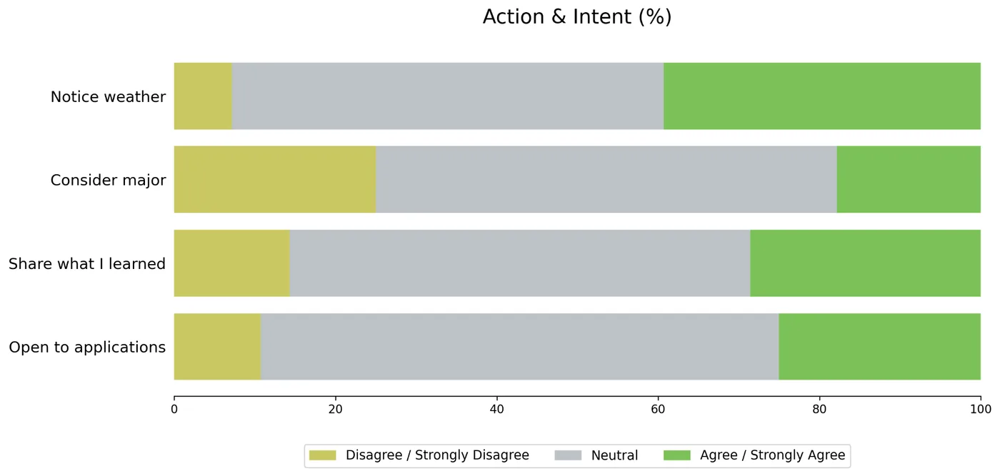
Fig. 2. Students’ Action & Intent Responses Across All 28 Students
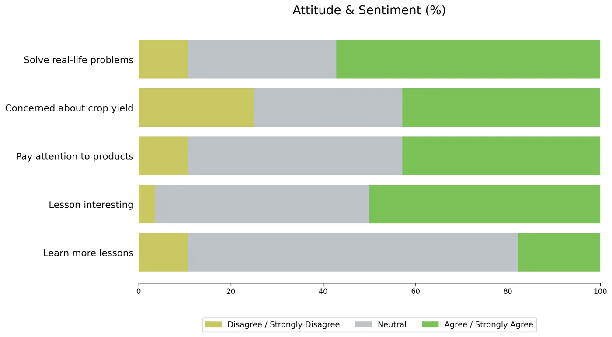
Fig. 3. Students’ Action & Sentiment Responses Across All 28 Students
Fig. 2 presents students’ overall willingness to take future actions related to the concepts and topics introduced throughout the lesson. A majority of students expressed agreement or neutral sentiment toward synthetic biology's real-world value, product awareness, and lesson engagement. However, some students remained uninterested in choosing biology-related majors at university after the lesson. Overall, the data indicates that most of the students' willingness to take future actions are toward neutral or agree.
Figure 3 illustrates students’ willingness to translate the knowledge gained from the lesson into practical actions. Overall, positive and neutral responses were the most common across all evaluated areas. Students showed the highest percentage of agreement in the engagement question, with half of the students agreeing that the lesson was interesting and expressing eagerness to solve real-life problems. While some of the students remained neutral in their attitude towards taking additional lessons, disagreement across all the Attitude questions remained consistently low (under 25%), which reflects a positive overall perception.
Open-ended: What Students and Teachers Enjoyed
Students: Across all student responses, the hands-on onion plasmolysis experiment appears to be the highlight of the lesson. Students frequently mentioned activities such as “peeling the onion,” “observing the cells under the microscope,” and the “onion experiment” as their favorite parts of the lesson. Despite the experiment, several students also mentioned “mutation game”, “DNA translation”, and “messaging game” in their responses, suggesting that they particularly enjoyed the interactive activities of the lesson, as they specifically noted: “I like how the team integrated experiment, game, and some important knowledge”.
Teacher: After the lesson, we gave the homeroom teacher of the class a survey to gain some feedback on our lessons. As a result, the feedback on the lesson was overall positive. In the survey, he mentioned that the lesson was designed interactively, rich with content, and well-organized. More specifically, he wrote that the interactive games and hands-on experiments made the lesson more engaging and enjoyable for the students. In addition, he also expressed his willingness to use our educational resources, including the lesson plans and presentation slides, in the future and to refer to them when designing related lessons.
Summary
Overall, the survey data indicates that our lessons successfully enhanced students' understanding of synthetic biology, DNA, and plant science concepts. The survey results and students' and teacher feedback also provided valuable insights that will guide future improvements to create a more interactive and effective learning experience.
Tools/Resources
Educational Tools & Resources
To translate our educational philosophy into active learning, we developed a suite of original teaching tools. These hands-on materials are hosted directly on our website and are freely accessible to educators, students, and outreach organizers looking to make synthetic biology engaging and accessible.
The following resources include many engaging and interactive games both physical and online as well as various lesson plan ideas that include the slides presentation to go along.
Goal
Introduce young learners to the foundational concepts of molecular biology by demonstrating how DNA codons operate and teaching them the fundamental rules of complementary base pairing (A with T, and C with G) through an engaging, accessible medium.
How We Designed to Achieve the Goals / How to Play
We designed and made a simple card game called the ATCG DNA Card Game:
Base Matching Mechanics: Each card features a 3-letter sequence made up of DNA bases. To form a pair and discard it from your hand, you must pair a card with its exact complementary match:
A pairs with T (e.g., AAA matches TTT)
C pairs with G (e.g., CAG matches GTC)
The Jokers: The two Jokers represent sequences using letters outside the standard ATCG alphabet (e.g. L/D/S), making them impossible to pair using normal DNA base-pairing rules.
Gameplay Loop: Players draw and trade cards to find matches, try to throw out completed pairs, and avoid getting stuck with the unmatchable non-ATCG Joker cards.
Feedback (from Education)
The response from our educational outreach sessions was overwhelmingly positive, with a significant majority of the participating students highlighting the card game as the absolute standout, favorite part of the entire lesson. Teachers and facilitators noted that the interactive element kept the children actively engaged, helping reinforce complex biological concepts through play much more effectively than standard teaching methods.
We built this game to make our synthetic biology research fun and easy to understand, showing how biological sensors and protective peptides work together to save crops from climate threats. It gives players a hands-on feel for real-world teamwork and problem-solving, turning complex science into a simple story about protecting Taiwan's agriculture.
How We Designed to Achieve the Goals / How to Play
Setup
2–5 players.
Deal 5 cards and 3 Gene Coins to each player.
Place the Climate Wheel and 3 Disaster Tokens in the center.
Card Types
Sensor (Blue), Action (Green), Boost (Yellow): Played together to build combos.
Functional (Purple): Free special abilities played anytime on your turn.
Stress Events (Red): Immediate hazards drawn from the deck.
Player Turn (4 Steps)
Play: Put 1–3 cards face-up on the table (cards are shared by everyone).
Combo: Discard 1 Sensor + 1 Action + 1 Boost from the table to complete a defense combo.
Spin: Spin the Climate Wheel.
Combo completed: Safe.
No combo completed: Add 1 Disaster Token.
Double Disaster sector: Requires 2 combos to stay safe.
Draw: Refill hand back to 5 cards. Pass clockwise.
Gene Coins
1 Coin: Discard 1 card and draw a new one.
2 Coins: Copy a card played by a teammate.
Gain Coins: Everyone gets +1 coin when any combo is completed.
Feedback (from Education)
After the lesson, students had to fill out a survey where many had mentioned that playing games were their favorite aspect. Additionally, they mentioned how the card game had made them understand better how sensors and peptides responded to climate stress and helped them learn new things.
Goal
Communicate the team's synthetic biology research (engineered PGPR bioreactors for crop protection) in an accessible, engaging way
Reach non-specialist audiences who wouldn't otherwise read a paper or poster
How We Designed to Achieve the Goals
Arcade-style defense game where every mechanic maps to real biology
Each stress type (heat, salinity, fungal disease, insects) behaves distinctly on screen
Each protectant's description explains its real mechanism (LEA peptides, NaD1 defensins, Bt toxins)
Story mode walks through six real crop scenarios with narrated context
Learning happens through play, not lecture
Available in English and Chinese for wider reach
How to Play
Move your drone to align under falling stresses
Select the matching protectant (number keys 1-4 or on-screen buttons)
Drone auto-fires; correct matches deal far more damage than wrong ones
Survive each chapter's threats to protect the crop
Spend credits earned in battle on upgrades between rounds
Unlock Infinite Mode after completing the campaign
We created Releafamon vs Distressamon to teach students how plants respond to environmental stress and how synthetic biology can be used to protect crops. By turning plant biology, climate stress, and the biological engineering process into a Pokémon-inspired battle game, we made these concepts more engaging and accessible to younger and non-specialist audiences.
The game allows players to experience the balance between maintaining plant health and developing a biological solution. Players must manage limited resources, conduct research, and complete an engineering pathway while responding to attacks caused by environmental stresses.
How We Designed the Game to Achieve These Goals
Biology-Based Mechanics: Releafamon collect Water and CO₂ and use photosynthesis to produce Sugar. These resources are required for survival, research, and biological engineering.
Environmental Stress as Enemies: Distressamon represent threats such as salinity, drought, pathogens, and other environmental stresses that damage plants or remove essential resources.
Synthetic Biology Pathway: The Releafamon player must complete five engineering stages to develop and deliver a protective biological product.
Bioreactor System: The game includes a bioreactor with a 50% success rate, demonstrating that biological production is not always predictable.
Research and Upgrades: Players earn Research Points that can be used to strengthen their Releafamon and unlock instructors.
Instructor System: Instructors are unlocked through Research Points and damage milestones. Each instructor permanently provides one additional Action Point and heals one specific Releafamon.
Strategic Trade-Offs: Players must decide whether to spend their actions gathering resources, attacking, researching, upgrading, or progressing through the engineering pathway.
Bilingual Accessibility: The game includes both English and Traditional Chinese, allowing it to reach a wider range of students in Taiwan.
Engaging Presentation: Pixel-art characters, animated attacks, sound effects, multiple battle environments, and familiar turn-based mechanics make the scientific content feel like part of the gameplay rather than a separate lecture.
How to Play
Two-Player Format: One player controls the Releafamon team, while the other controls the three Distressamon. Players take turns using the same device.
Action Points: Each player begins with a limited number of Action Points per turn. Actions can be used to gather resources, attack, switch characters, purchase upgrades, or advance the engineering process.
Photosynthesis: The Releafamon player can spend one Water and one CO₂ to produce Sugar. Photosynthesis does not consume an Action Point.
Resource Management: Distressamon can drain Water, CO₂, and other resources. If the Releafamon player has zero of any essential resource at the end of the Distressamon turn, the active Releafamon takes three damage.
Releafamon Abilities: Releafamon can attack, heal, create shields, collect resources, and purchase stronger versions of their abilities.
Distressamon Abilities: Each Distressamon has attacks, stacking debuffs, a one-use Terrain ability, and a powerful Disaster move that unlocks after enough damage has been dealt.
Terrain Effects: Terrain lasts for three Distressamon turns and only benefits the Distressamon that created it. It increases damage by 20% and removes one additional resource.
Research and Instructors: The Releafamon player earns Research Points and completes damage challenges to unlock instructors. Each instructor permanently adds one Action Point, allowing the player to perform more actions in later turns.
Releafamon Victory: The Releafamon player wins by completing all five engineering stages and successfully delivering the final protective product, or by defeating all three Distressamon.
Distressamon Victory: The Distressamon player wins immediately if any member of the Releafamon team is defeated.
Educational Value
Through gameplay, students learn that protecting crops requires more than simply defeating an environmental threat. They must maintain photosynthesis, manage limited biological resources, conduct research, optimize a bioreactor, and complete an entire engineering process before a protective product can be delivered.
The game also demonstrates that synthetic biology involves experimentation, uncertainty, and strategic decision-making. Because every scientific concept is connected to a visible gameplay mechanic, students can learn through experience instead of memorizing isolated definitions.
Feedback and Evaluation
Formal student feedback will be collected during future educational outreach sessions. Students will be asked whether the game improved their understanding of plant stress, photosynthesis, bioreactors, and the synthetic biology engineering process. Their feedback and gameplay performance will also be used to improve the game’s scientific clarity, difficulty, balance, and accessibility.
Goal
Lets users explore how environmental conditions affect plant health through hands-on experimentation
Designed for non-specialist audiences: no science background needed
How we designed to achieve these goals
Five sliders (temperature, water, sunlight, salinity, pH) each trigger immediate, visible plant responses
Four crop types (tomato, lettuce, strawberry, peanut) have different stress tolerances, rewarding exploration
Plant visibly yellows, wilts, and droops in real time: stress is shown, not just described
Day-by-day simulation shows how conditions compound over 30 days, not just a snapshot
One-sentence info panel explains why each stress occurs in plain language
How to use
Choose a crop from the dropdown menu
Drag any slider to change an environmental condition
Watch the plant react instantly: leaves droop, yellow, and brown under stress
Press Play to simulate 30 days of growth under current conditions
Drag the day slider manually to jump to any point in time
Experiment with combining multiple stresses to see compounded effects
Lesson Plans
We created structured, ready-to-teach lesson plans designed to fit directly into standard middle and high school STEM curricula.
Each module outlines targeted age groups, clear learning objectives, required materials, step-by-step procedures, and assessment questions.
Fundamentals of genetic engineering, biosafety, bioethics, and real-world applications of synthetic biology.
Presentation Slides
To support teachers and workshop hosts, we put together complete, visual slide decks corresponding to our lesson plans.
Feature clear diagrams, structured explanations, and engaging illustrations to simplify complex concepts.
Available in downloadable formats so instructors can present them directly or adapt them to suit their classroom's needs.
We also made our slides bilingual with both Chinese and English explanations which makes learning about these topics more accessible to students of different backgrounds.
Together, all these tools and resources can be found in our education website where they are presented in easily downloadable formats that are easy to understand and use. Explore the education website →
Long Term Impacts
Overview
Education, in our eyes, isn't only about sharing information and teaching at one specific point of time, instead, it should be something that students are able to carry forward with them and continue to share and find useful over a period of time. Our education program focuses on helping students understand plant stress, climate change, sustainability, and synthetic biology through hands-on activities and interactive learning. However, we also wanted to consider what would happen after our lessons were finished. This is why throughout our education journey, one of our major goals was to create an education that was truly sustainable.
Mutual Learning and Dialogue
Our Education was implemented in a way where both sides were mutually able to contribute to the conversation rather than just a one way lecture. We employed the use of interactive feedback loops post-activity survey forms. These feedback allowed us to ascertain the student’s perspectives on climate change and synthetic biology directly guided our lesson adaptations. Moreover, during the lesson itself, rather than only talking about the advantages of synthetic biology, we included debates as part of the lesson itself to really understand different perspectives that students might have towards synthetic biology and our product, even if those perspectives were not aligned with ours.
Implementation Process
Our educational rollout followed a deliberate, multi-stage process that began with assessing audience needs and language requirements, leading to bilingual (English and Traditional Chinese) materials. We then tested our workshops and lessons with members of the team, ensuring that instructions were clear, material was engaging, and the content was at the right level for the students. After the lesson, we established a feedback loop using participant feedback to optimize lesson pacing, simplify complex biological concepts, and build a lesson that was truly impactful.
What is Sustainable Education?
Sustainable education is education that creates lasting learning opportunities and can continue to benefit students and communities over time. It focuses not only on what students learn today, but also on creating resources, knowledge, and learning environments that can be passed on to future learners.
Below are five of the main points we have identified that make up parts of completely sustainable education:
Environmental Sustainability
Education should encourage awareness of environmental challenges and help students understand how their actions and knowledge can contribute to a more sustainable future.
Accessible Education
The education should be easily accessible to students everywhere, including those from different backgrounds with resources that are flexible and can be used in different situations.
Long-Term Learning
The education should be something students can continue building on outside of class time, not just a one time event.
Sustainable Resources
Educational practices and resources should be practical and reusable, allowing schools and teachers to continue using them without relying on one-time programs or outside support.
Preparing for the Future
Education should equip students with knowledge, skills, and awareness that can help them understand and respond to future challenges.
How we Achieved Sustainable Education
Here is how our team achieved sustainable education, using the five points presented above:
Environmental Sustainability
Our education program focuses on helping students understand environmental challenges and their connection to plants, agriculture, and climate change. Through our lessons and activities on plant stress, students explore how factors such as extreme heat, drought, salinity, and disease can affect plants and food production. By introducing these topics at a young age, we hope to build greater awareness of environmental challenges and encourage students to think about how science and technology can contribute to a more sustainable future.
Accessible Education
We wanted our education materials to be accessible to students and teachers beyond the people we were able to reach directly. To achieve this, we created a website that can be freely accessed which includes lesson plans, presentations, worksheets, activities, and other learning materials from this year as well as the past two years. Our materials are also mostly available in both English and Traditional Chinese so that they can be used in different learning environments and reach a wider range of students.
Long-Term Learning
Rather than designing our education program around a single activity or lesson, we aimed to give students knowledge that they can continue building on. Our activities introduce concepts such as climate change, plant stress, DNA, and synthetic biology in a way that connects different ideas together. We also provide resources that allow students and teachers to revisit these topics after our lessons have ended, encouraging learning to continue beyond our direct interactions.
Sustainable Resources
To make our education program last beyond our iGEM season, we created resources that can be reused and adapted by teachers and students. Our lesson plans, slides, worksheets, games, and other materials are designed to be used without requiring our team to be physically present as they contain instructions for contents that may be more complex. By making these resources available online, teachers can continue incorporating them into their own classrooms, while future students can benefit from materials created during our project.
Preparing for the Future
Our education program introduces students to issues that will become increasingly important in the future, including climate change, food security, environmental stress, and sustainable agriculture. At the same time, we introduce synthetic biology as one of the possible approaches to addressing these challenges. By giving students both an understanding of these problems and an opportunity to explore scientific solutions, we hope to encourage curiosity and help them become more prepared to engage with future challenges.
Conclusion
Through our education program, we aimed to create an impact that extends beyond the lessons we conducted this year. By combining environmental awareness, accessibility, long-term learning, reusable resources, and future-oriented knowledge, we hope that the materials and ideas developed through ReLeaf can continue to be shared, adapted, and used by students and teachers alike in the future.